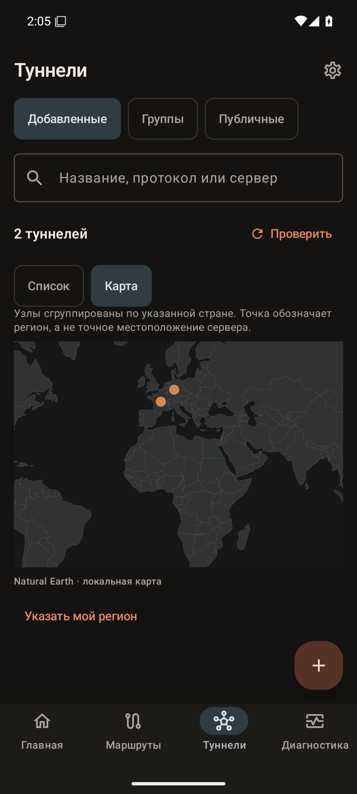

Маршруты по приложениям
В Windows настраивайте правила для процессов, сервисов и доменов. В Android выбирайте приложения и путь для их трафика.
Windows + Android · открытый код Предварительные сборки
Направьте браузер через личный VPN, задайте отдельный маршрут для сайта и оставьте остальной трафик на прямом соединении. Waarp помогает управлять подключениями из одного интерфейса.
Preview 1.0.0 для Windows и Android: Windows EXE без цифровой подписи, Android APK с debug-подписью. Проверки и ограничения относятся к точному исходному коду этого выпуска.

Waarp — клиент для управления маршрутами. Подключите собственный VPN или прокси, затем решите, какой трафик через него отправлять.
В Windows настраивайте правила для процессов, сервисов и доменов. В Android выбирайте приложения и путь для их трафика.
Импортируйте поддерживаемые профили и выбирайте подключение из своей библиотеки. Необязательный публичный каталог помогает искать сторонние узлы.
В Windows проверяйте этапы DNS, TCP, TLS и HTTP для выбранного адреса. Смотрите измеренные ответы и разбирайтесь, где соединение прерывается.
Нативный клиент Android
Импорт профилей, маршруты выбранных приложений, список и карта подключений — в нативном интерфейсе Kotlin. Просмотр карты сам по себе не включает VPN и не меняет маршрут.
APK preview 1.0.0 подписан отладочным ключом и устанавливается отдельно от production-приложения. Сертификат отличается от r5: обновление поверх него невозможно. Для первой установки выберите устройство без r5; прежнюю установку и данные сохраните. Выберите APK для архитектуры устройства.
Для установленного Obtainium: импортируйте Android preview, подтвердите импорт и затем установку. Как настроить.

Скачайте файл для своей платформы и сверьте SHA-256 по инструкции установки.
Импортируйте профиль своего сервера или провайдера. Windows запросит повышение прав для туннеля; Android — системное разрешение VPN.
Выберите приложение и подключение, сохраните маршрут и проверьте результат в диагностике.
Перед использованием. Публичными узлами управляют сторонние владельцы; их доступность и условия различаются. В Windows нет независимого firewall kill switch: при выходе движка система может вернуться к обычному маршруту. Ограничения и надёжность.
Хотите собрать текущий исходный код? Руководство в репозитории описывает сборку и возможности main. Для скачанных preview-сборок ориентируйтесь на заметки к выпускам.